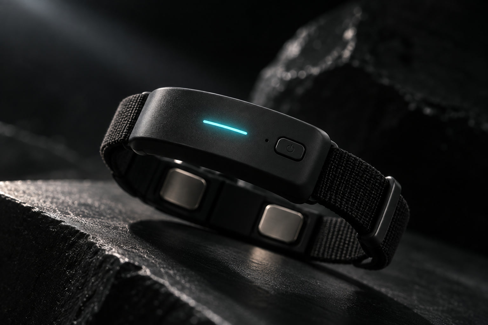
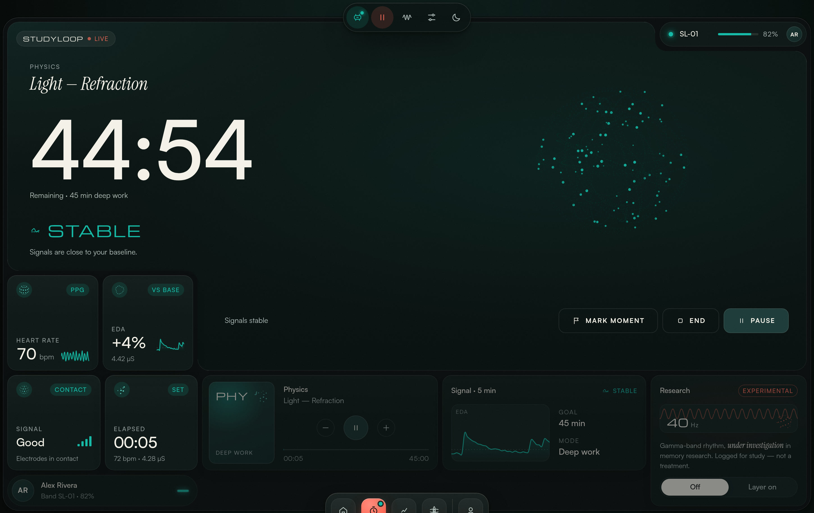
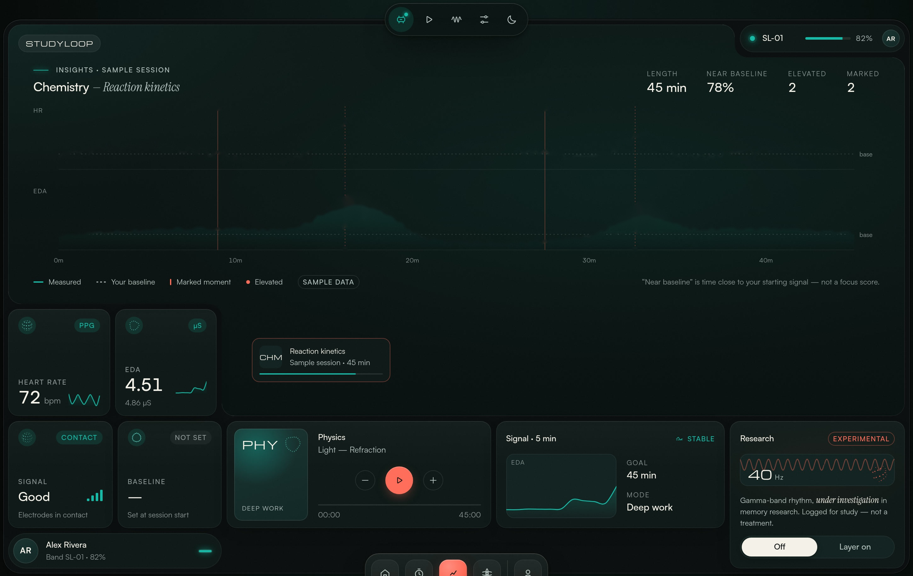
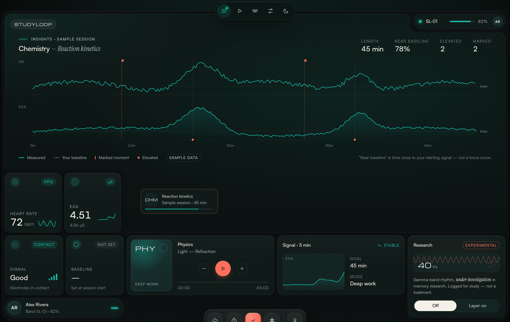

Lecture 7 — Optics.pdf
Snell's law
Problem set 4
Study group chat
Lo-fi beats · live
Inbox (12)
Cart (3)
Flashcards
New tab
Lecture 7 — Refraction of light
OPTICS
Principles of light
PHYSICS
Light — Refraction
n₁ sin θ₁ = n₂ sin θ₂
21:47
Study group
14 new messages
Calendar
Problem set due 9:00
Messages
are you coming tonight?
Reminder
Quiz on Friday
Battery
12% remaining
lab report!!
email prof
Ch. 5 reading
quiz fri 9am
Everything pulls at you.

STUDYLOOP
Heart rate
PPG pulse · inner wrist
Skin conductance
EDA · two electrodes
20 s
Baseline
It learns your normal.

Live session
One subject.
One timer.
PHYSICS
Light — Refraction


See where your signals moved.
Not a mind reader.
Study with feedback.
STUDYLOOP
Focus, measured differently.